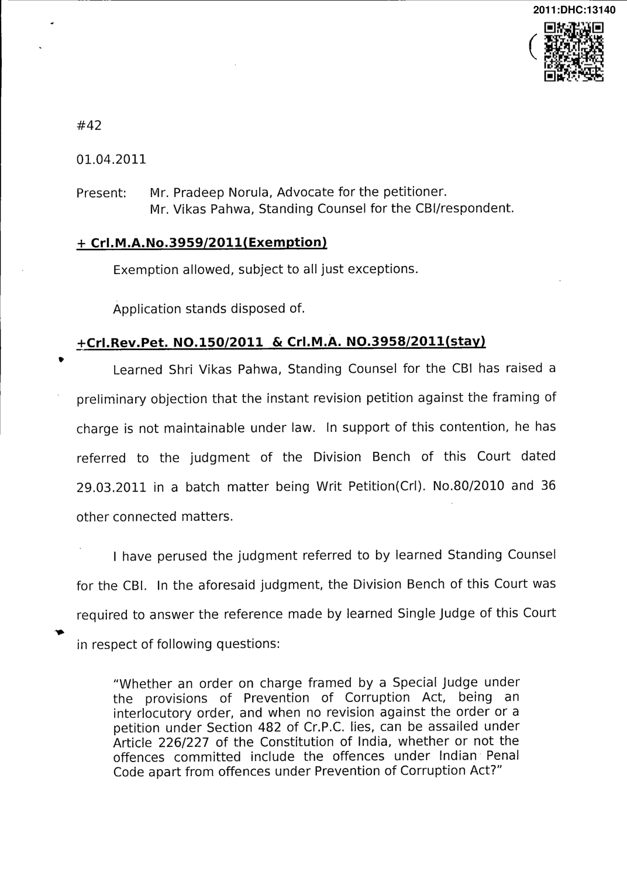
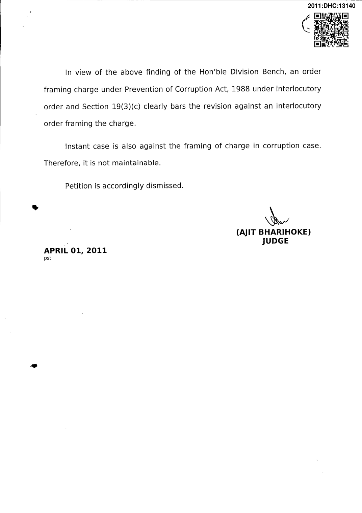

The Division Bench after discussing number of judgments on the subject have answered the reference in following terms: "33. In view of our aforesaid discussion, we proceed to answer the reference on following terms:
- An order framing charge under the Prevention of Corruption Act, 1988 is an interlocutory order.
- As Section 19(3)(c) clearly bars revision against an Interlocutory order and framing of charge being an interlocutory order a revision will not be maintainable.
- A petition under Section 482 of the Code of Criminal Procedure and a writ petition preferred under Article 227 of the Constitution of India are maintainable.
- Even if a petition under Section 482 of the Code of Criminal Procedure or a writ petition under Article 227 of the Constitution of India is entertained by the High Court under no circumstances an order of stay should be passed regard being had to the prohibition contained in Section 19(3)(c) of the 1988 Act.
- The exercise of power either under Section 482 of the Code of Criminal Procedure or under Article 227 of the Constitution of India should be sparingly and in exceptional circumstances be exercised keeping in view the law laid down in Siya Ram Singh (supra), Vishesh Kumar (supra), Khalil Ahmed Bashir Ahmed (supra), Kamal Nath & Others (supra) Ranjeet Singh (supra) and similar line of decisions in the field.
- It Is settled law that jurisdiction under Section 482 of the Code of Criminal Procedure or under Article 227 of the Constitution of India cannot be exercised as a "cloak of an appeal in disguise" or to reappreciate evidence. The aforesaid proceedings should be used sparingly with great care, caution, circumspection and only to prevent grave miscarriage of justice.
- Reference is answered accordingly. The writ petitions be listed before the appropriate Bench."
